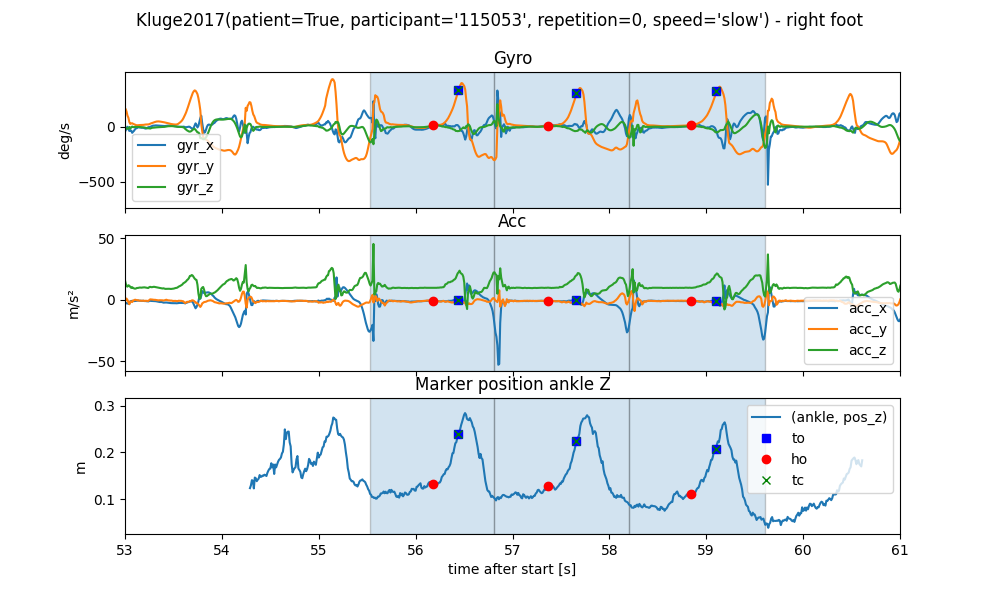
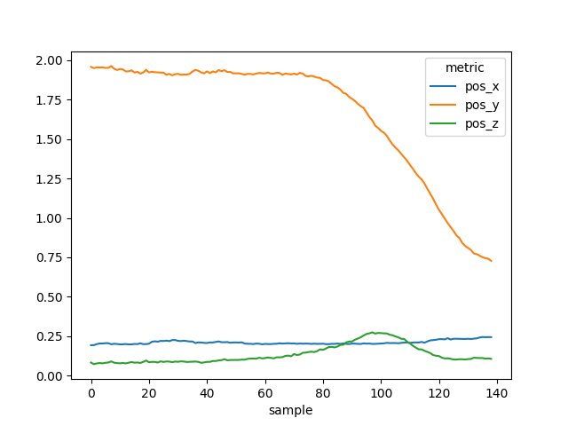

Note
Click here to download the full example code
Kluge2017 - A dataset for in-lab parameter validation in healthy and PD.#
The Kluge 2017 dataset was recorded to test the validity of spatial-temporal parameters extracted from IMUs and their test-retest reliability. The dataset contains data from healthy participants and participants with Parkinson’s disease.
General information#
Each participant performed 4x10m walk trials at a slow, preferred and fast speed. Five of the participants performed the trials twice with two weeks in between.
The dataset contains IMU data from each foot recorded with the eGait system (sensor lateral attached to the shoe) and reference data using a marker-less Simi Motion system. Gait events were annotated manually based on the camera recordings und multiple points at the foot were tracked using the Simi Motion system.
For each 10m walk, only the middle 3 m are covered by the Simi Motion system, resulting on avaerage in 2-4 strides per walk-through.
The eGait system in the dataset used the Shimmer 3 sensors using a sampling rate of 102.4 Hz. For the data loaded using the dataset class, we adjust the coordinate system as shown in the figure below. While the sensor configuration is identical to other Shimmer 3 datasets, the coordiante system of the exported data was already rotated to align both feets. Hence, we need to perform a different coordinate transformation than for the other datasets:
Warning
For this example to work, you need to have a global config set containing the path to the dataset.
Check the README.md for more information.
from gaitmap_datasets import Kluge2017
First we will create a simple instance of the dataset class.
We can see that for each participant we have 3 different walking speeds, the information if they are healthy or PD
(patient = True) and if the data was recorded in the first or second session.
dataset = Kluge2017()
dataset
Based on the index, we will select just the PD cohort
pd_cohort = dataset.get_subset(patient=True)
pd_cohort
We will simply select the first participant in the dataset for the following analysis
participant = pd_cohort.groupby("participant")[0].groupby(None)
participant
Let’s have a look at the slow walk data
slow_walk = participant.get_subset(speed="slow")
slow_walk
For each gait test, we have access to the raw IMU data, the marker position data and the gait events. Let’s have a look at the raw IMU data. This is a dictionary with the sensor name as key and a pandas DataFrame as value. Note that the index is the time in seconds already aligned with the mocap data.
Then let’s also load the marker position data. As all markers trajectories have the same length, this is just a simple pandas DataFrame, with the foot as the top-most column level. We can see that we get position, velocity and acceleration data for the ankle and the tip of the foot. Note that these trajectories are from “actual” markers, but virtual markers defined by the biomechanical model fitted by the SIMI system.
Many values in the dataframe will be NaN, as the mocap system only tracks the foot for a short period of time.
mocap_data = slow_walk.marker_position_[foot]
mocap_data
Let’s plot the position of the foot marker and the IMU data together.
import matplotlib.pyplot as plt
fig, (ax1, ax2, ax3, ax4, ax5) = plt.subplots(nrows=5, sharex=True, figsize=(10, 10))
fig.suptitle(f"{slow_walk.group} - {foot} foot")
# Plot the IMU data
ax1.set_title("Gyro")
ax1.set_ylabel("deg/s")
imu_data.filter(like="gyr").plot(ax=ax1)
ax2.set_title("Acc")
ax2.set_ylabel("m/s²")
imu_data.filter(like="acc").plot(ax=ax2)
# Plot the mocap data
ax3.set_title("Marker position X")
ax3.set_ylabel("m")
mocap_data.xs("pos_x", level=1, axis=1).plot(ax=ax3)
ax4.set_title("Marker position Y")
ax4.set_ylabel("m")
mocap_data.xs("pos_y", level=1, axis=1).plot(ax=ax4)
ax5.set_title("Marker position Z")
ax5.set_ylabel("m")
mocap_data.xs("pos_z", level=1, axis=1).plot(ax=ax5)
plt.tight_layout()
plt.show()
We can also plot the gait events on top of the data.
The gait events are stored in a dictionary with the foot as key and a pandas DataFrame as value.
Each row in the DataFrame represents one gait stride.
Each stride starts and ends with a heel strike/initial contact (IC) of the same foot.
The HS event provided with the stride is the start event.
In addition, we have the toe-off (TO), the heel-off (HO).
The terminal contact (TC) is either the TO or the HO depending on which event occurs last.
All events are provided as samples in the Mocap data.
gait_events = slow_walk.mocap_events_[foot]
gait_events
Let’s plot the gait events on top of the data.
import matplotlib.pyplot as plt
def plot_with_marker():
fig, (ax1, ax2, ax3) = plt.subplots(nrows=3, sharex=True, figsize=(10, 6))
fig.suptitle(f"{slow_walk.group} - {foot} foot")
# Plot the IMU data
ax1.set_title("Gyro")
ax1.set_ylabel("deg/s")
imu_data.filter(like="gyr").plot(ax=ax1)
ax2.set_title("Acc")
ax2.set_ylabel("m/s²")
imu_data.filter(like="acc").plot(ax=ax2)
# Plot the mocap data
ax3.set_title("Marker position ankle Z")
ax3.set_ylabel("m")
mocap_data[("ankle", "pos_z")].plot(ax=ax3)
# Plot the gait events
for i, (_, stride_mocap) in enumerate(gait_events.iterrows()):
stride_time = stride_mocap / slow_walk.mocap_sampling_rate_hz_
stride_imu = (stride_time * slow_walk.sampling_rate_hz).round().astype(int)
for ax, plot_data in zip(
(ax1, ax2, ax3), (imu_data["gyr_y"], imu_data["acc_x"], mocap_data[("ankle", "pos_z")])
):
# Plot the stride as a vertical span
ax.axvspan(stride_time.start, stride_time.end, alpha=0.2, edgecolor="black")
index_values = stride_imu
if ax == ax3:
index_values = stride_mocap
# Plot the individual events
ax.plot(stride_time.to, plot_data.iloc[index_values.to], "s", color="blue", label="to" if i == 0 else None)
ax.plot(stride_time.ho, plot_data.iloc[index_values.ho], "o", color="red", label="ho" if i == 0 else None)
ax.plot(stride_time.tc, plot_data.iloc[index_values.tc], "x", color="green", label="tc" if i == 0 else None)
ax3.legend()
return fig, (ax1, ax2, ax3)
plot_with_marker()
plt.tight_layout()
plt.show()
To better see what is going on, we will zoom into one WB.
We can see that all the gait events occur in order and roughly line up with the expected signal regions in the IMU signal. We can also see that the z-axis of the ankle marker is drifting over the course of each walk. This is because the mocap system is not calibrated level to the floor. In case parameters like foot-clearance are calculated, this needs to be taken into account.
Spatial Parameters#
In case you want to caluclate spatial parameters based on the trajectories and events, you can use the
marker_position_per_stride_ property.
It provides the marker information per stride, making it easy to calculate various parameters
per_stride = slow_walk.marker_position_per_stride_[foot]
per_stride
To extract the information of a single stride (e.g. stride_ist 55), we can use the loc method.
stride_54 = per_stride.loc[54]
stride_54

Further Notes#
When applying a train test split on the data, remember that some participants have multiple recordings. Hence, always group by participant before splitting (see tpcp documentation for more details).
When comparing the results of an IMU algorithm to the mocap data, the recommended way is to compare based on aggregated values over the entire gait test, as alignment of individual strides might not always be possible and hide issues, when an algorithm is missing multiple strides. However, keep in mind that the mocap system only covers the middle part of each walk. This means that when comparing aggregated values (in particular measures of variance) using all detected strides in the IMU signal might result in a biased comparison.
When calculating spatial parameters, we recommend the use of the ankle trajectory, as it is the most stable trajectory.
Total running time of the script: ( 0 minutes 24.243 seconds)
Estimated memory usage: 682 MB